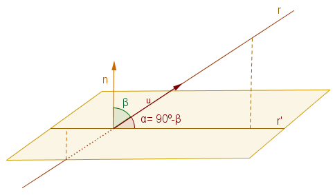

Módulo de un vector
| Dado un vector cualquiera \(\vec{v}\), el módulo de este vector es su longitud, es decir, lo que mide el segmento que une sus extremos. |
Si el vector \(\vec{v}\) tiene como coordenadas \(\vec{v} = (v_1,v_2,v_3)\) sabemos que el vector es el mismo que el vector que va del origen de coordenadas \(O = (0,0,0)\) al punto \(P = (v_1,v_2,v_3)\), por tanto, la longitud del vector \(\vec{v}\) es la distancia del punto \(O\) al punto \(P\).
El módulo del vector \(\vec{v}\) lo escribimos \(|\vec{v}|\).
Con todo lo anterior tenemos que:
De la misma forma, dados dos puntos \(A(a_1,a_2,a_3)\) y \(B(b_1,b_2,b_3)\), el módulo del vector \(\overrightarrow{AB}\) se calcula:
Vector unitario
| Cuando un vector tiene módulo 1 se denomina vector unitario. |
Producto escalar
|
Dados dos vectores \(\vec{u} = (u_1, u_2, u_3)\) y \(\vec{v} = (v_1, v_2, v_3)\) llamamos producto escalar de los dos vectores anteriores al número obtenido así: \[ \vec{u} \bullet \vec{v} = (u_1, u_2, u_3) \bullet (v_1, v_2, v_3) = u_1 \cdot v_1 + u_2 \cdot v_2 + u_3 \cdot v_3 \] |
Producto escalar. Ángulo
|
Además, si \(\vec{u} = (u_1, u_2, u_3)\) y \(\vec{v} = (v_1, v_2, v_3)\), se cumple que \[ \vec{u} \bullet \vec{v} = |\vec{u}| \cdot |\vec{v}| \cdot \cos(\widehat{\vec{u}, \vec{v}}) \] |
Utilizando la trigonometría, según la imagen que observamos en la parte de la derecha, sabemos que la proyección del vector \(\vec{u}\) sobre el vector \(\vec{v}\) es:
\[ \overset{\vdash\hspace{-.1em}\rule[1.15mm]{4.8mm}{0.15mm}\hspace{-.1em}\dashv}{\text{OA'}} = |\vec{u}| \cdot \cos(\alpha) \]donde \(\alpha\) es el ángulo que forma \(\vec{u}\) con \(\vec{v}\)Por tanto, el producto escalar del vector \(\vec{u}\) y el vector \(\vec{v}\) es el resultado de multiplicar la proyección del vector \(\vec{u}\) sobre el vector \(\vec{v}\), por el módulo del vector \(\vec{v}\).
Vectores ortogonales y ortonormales
|
Dos vectores \(\vec{u}\) y \(\vec{v}\) son ortogonales si forman un ángulo de \(\pmb{90\textdegree}\) o lo que es lo mismo, si su producto escalar es cero. Además, si los dos vectores ortogonales son unitarios, se dice que los dos vectores son ortonormales. |
Ángulo entre dos rectas
Dadas dos rectas \(r\) y \(s'\) no paralelas, si son coplanarias se cortan en un punto formando dos ángulos. Si no son coplanarias, podemos hacer una proyección de una de ellas de forma que la recta \(r\) y la \(s'\) sí son coplanarias. Al ser coplanarias se cortan en un punto formando dos ángulos. Llamamos ángulo que forman las dos rectas al menor de estos ángulos. Por tanto, el ángulo que forman dos rectas puede ser a lo sumo de 90º.

¿Cómo podemos calcular el ángulo que forman las rectas \(r\) y \(s\)? Muy sencillo, ese ángulo es el que forman los vectores directores respectivamente. Si observamos la imagen, el ángulo que forman las rectas \(r\) y \(s\) es el ángulo que forman sus vectores directores \(\overrightarrow{u_r}\) y \(\overrightarrow{u_s}\).
Ángulo entre dos planos en el espacio
Dados dos planos \( \pi_1 \) y \( \pi_2 \), cuando se cortan en el espacio forman dos ángulos distintos. Como podemos observar en la ilustración, uno de ellos es superior a \(90\)° y el otro menor. Definimos el ángulo que forman los dos planos como el menor de estos ángulos (y, por tanto, siempre menor o igual que \(90\)°).
Fíjate en que el ángulo que forman los dos planos es exactamente el mismo que el que forman sus respectivos vectores normales \( \vec{v}_1 \) y \( \vec{v}_2 \). Gracias a esta relación, podemos calcular con facilidad el ángulo entre los dos planos utilizando dichos vectores.

En el caso en que los planos no se corten (es decir, que sean paralelos), sus vectores normales formarán un ángulo de \(0\)°, lo que se corresponde con un ángulo de \(0\)° entre los propios planos.
| Definimos el ángulo entre dos planos \( \pi_1 \) y \( \pi_2 \) como el que forman sus vectores normales \( \vec{v}_1 \) y \( \vec{v}_2 \). |
Ángulo que forman una recta y un plano
| Llamamos ángulo entre recta y plano al ángulo \(\alpha\) que forma la recta \(r\) con su proyección \(r'\) sobre el plano. |

Este ángulo \(\alpha\) es el complementario \((90º-\beta)\) del ángulo \(\beta\) que forman el vector director \(\vec{u}\) de la recta con el vector normal \(\vec{n}\) al plano.
Al ser complementarios, se verifica que \[ \text{cos } \alpha = \text{sen } \beta \]
Caso particular: Si el vector director es perpendicular al vector normal del plano, el ángulo que forman es \(90º-90º=0\). En este caso la recta estaría contenida en el plano.